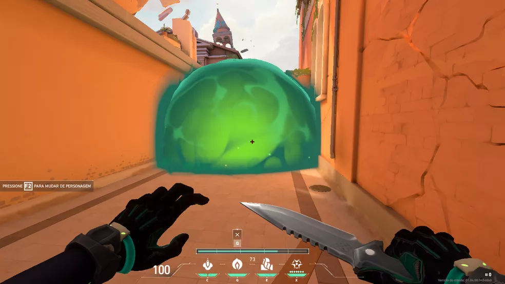
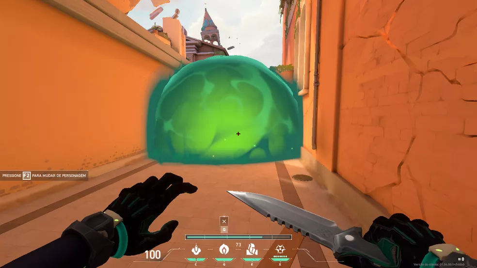
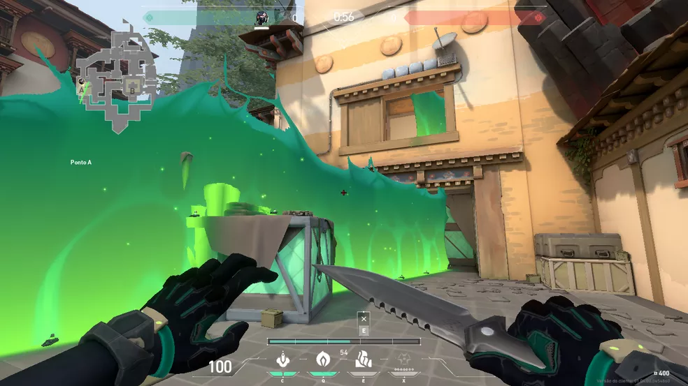
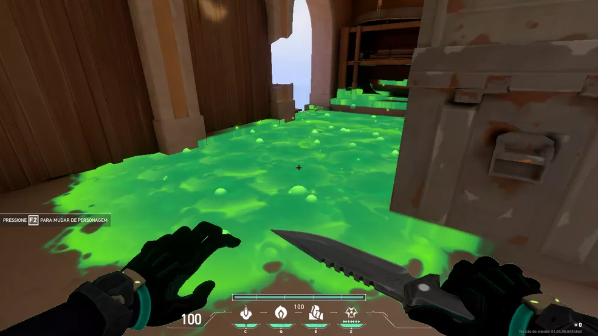
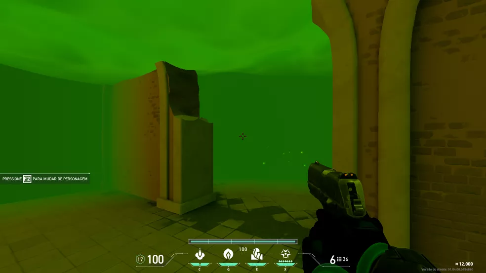

Nube Venenosa-Q
Viper lanza una granada de gas que puede activar y desactivar,al activarla crea una orbe de nube venenosa que daña al enemigo y limita su vision.
Viper es una química estadounidense con un amplio arsenal de dispositivos venenosos que le sirven para tomar el control del campo de batalla y cegar a los enemigos. Si las toxinas no acaban con su presa, la paranoia la rematará.
Viper es una Controladora,sus toxinas son excelentes para dividir el mapa y crear incomodida en el enemigo. Es una personaje ideal para lurkear.
Viper lanza una granada de gas que puede activar y desactivar,al activarla crea una orbe de nube venenosa que daña al enemigo y limita su vision.
Viper lanza un muro de larga distancia que puede activar y desactivar cuando ella quiera.
Viper lanza un cartucho que se rompe al impactar al suelo,este suelta un charco de toxinas que dañan al enemigo.
Viper libera una nube de toxina gigante que daña al enemigo al entrar en ella,tambien limita su vision.
